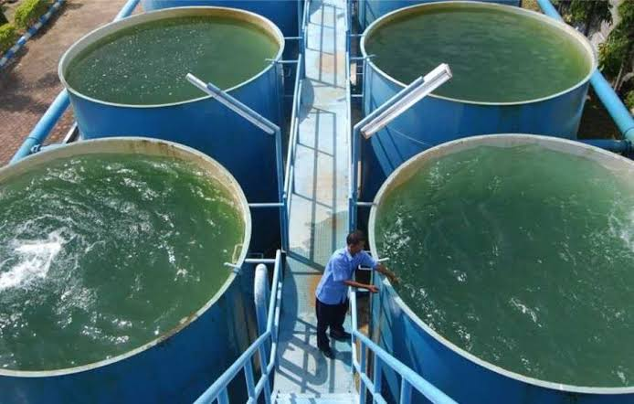
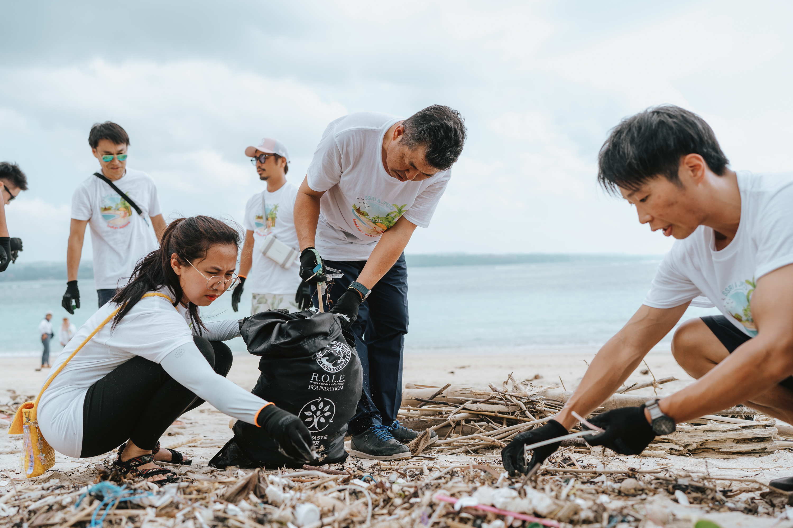
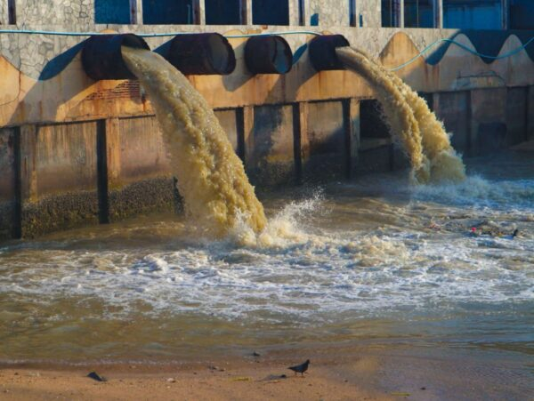

Melindungi Kesehatan
Membantu mengurangi paparan kuman dan sumber penyakit dari limbah.
.png)
Sanitasi lingkungan adalah upaya menjaga lingkungan tetap sehat melalui pengelolaan limbah, kotoran manusia, air limbah, dan saluran pembuangan secara aman.
Kebiasaan sederhana membantu menjaga lingkungan dan sumber air tetap bersih.

Sanitasi yang baik membantu menjaga kesehatan manusia, melindungi sumber air, dan menciptakan lingkungan yang nyaman untuk ditinggali.

Sanitasi lingkungan mencakup cara mengelola kotoran manusia, air limbah, dan limbah rumah tangga agar tidak membahayakan kesehatan maupun mencemari lingkungan.
Lingkungan yang sehat memerlukan pengelolaan air limbah dan kotoran manusia secara aman, bukan hanya kebersihan yang terlihat di permukaan.
Sanitasi layak harus memperhatikan pengumpulan, pengolahan, dan pembuangan limbah secara aman.
Membantu mengurangi paparan kuman dan sumber penyakit dari limbah.
Membantu mencegah pencemaran sungai dan sumber air bersih.
Lingkungan yang terawat terasa lebih nyaman untuk beraktivitas.
Mengurangi pencemaran tanah, air, dan lingkungan sekitar.
Pengelolaan limbah yang tidak aman dapat menimbulkan masalah bagi kesehatan manusia dan kualitas lingkungan.

Air limbah dan kotoran yang masuk ke sungai dapat membawa zat pencemar dan mikroorganisme.
Sanitasi buruk dapat meningkatkan risiko penyakit yang berkaitan dengan air dan lingkungan tercemar.
Sampah yang dibuang ke saluran dapat menghambat aliran air dan meningkatkan risiko genangan.
Penumpukan limbah dan air yang tidak mengalir dapat menimbulkan bau tidak sedap.
Pengelolaan limbah yang aman merupakan upaya penting untuk melindungi kesehatan masyarakat dan sumber air.
Kenali aspek penting sanitasi lingkungan dan penerapannya dalam kehidupan sehari-hari.
Memahami sanitasi sebagai upaya mengelola limbah secara aman untuk menjaga kesehatan dan kebersihan lingkungan.
Memastikan toilet dan saluran pembuangan digunakan serta dikelola dengan baik.
Mengelola sampah dan air limbah dengan tepat serta menghindari pembuangan sembarangan ke sungai.
Memahami hubungan sanitasi buruk dengan pencemaran air dan meningkatnya risiko penyakit.
Membiasakan diri menjaga toilet, saluran air, dan lingkungan sekitar agar tetap bersih.
Sanitasi yang baik dimulai dari kebiasaan sederhana yang dilakukan secara konsisten.
Bersihkan toilet secara rutin dan gunakan fasilitas dengan benar.
Jangan membuang sampah ke sungai, selokan, atau saluran air.
Pastikan air limbah rumah tangga dikelola dengan cara yang aman.
Cuci tangan dengan sabun dan air mengalir, terutama setelah menggunakan toilet.
Pastikan saluran tidak tersumbat dan segera tangani masalahnya.
Ajak orang sekitar melakukan kegiatan kebersihan bersama.